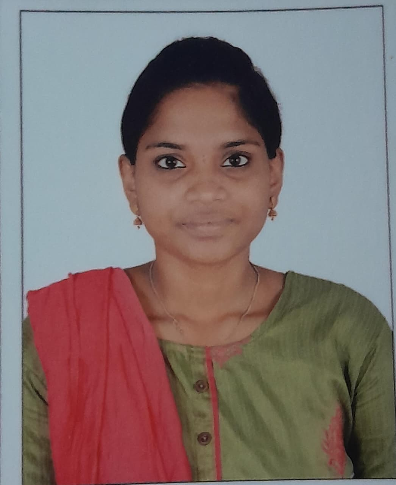

BCA Graduate | Data Analytics Enthusiast
Python | Power BI | MySQL | Excel
I am a BCA graduate passionate about Data Analytics, Python, Power BI, MySQL and Excel.
Analyzed datasets using Python and identified trends through data visualization.
Created an interactive dashboard to monitor sales performance and business insights.
Designed and managed database tables using SQL queries and relationships.
Shri Shankarlal Sundarbai Shasun Jain College for Women
2023 - 2026
Sri Sitaram Vidyalaya Matriculation Higher Secondary School, Chennai
Contributed to team activities, coordination, and student engagement initiatives.
SecureKloud Technologies (8K Miles)
Email: sandhyaarigesan23@gmail.com